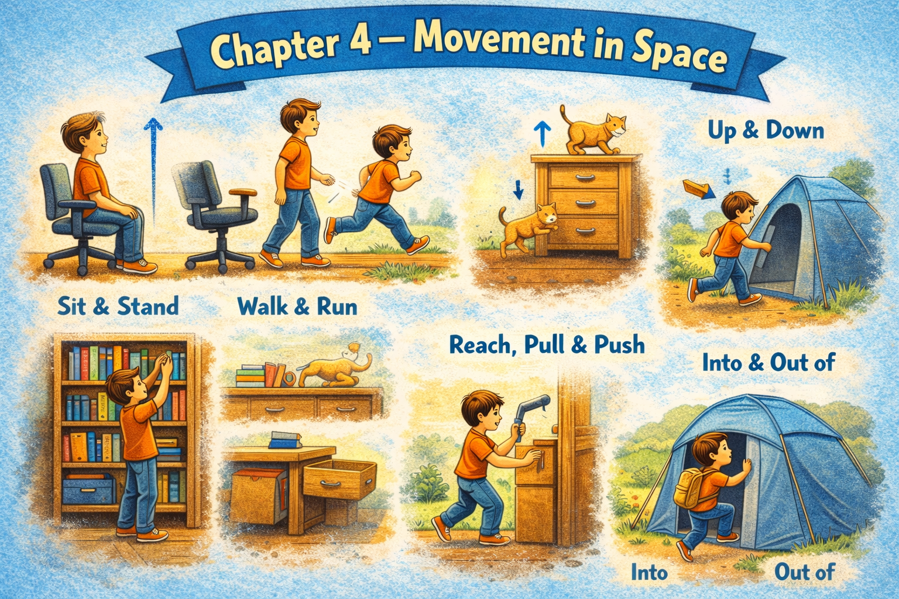

4 Chapter 4 — Movement in Space
这一章训练的是：
物体如何移动
人如何移动
运动如何改变空间关系
这是现实表达里最核心的动词层。

4.1 Micro Scene 1 — Sliding and Shifting
4.1.1 1️⃣ Scene Text
When I push the laptop slightly forward, it slides across the desk.
The movement is smooth but controlled.
If I pull it back, the cables tighten behind it.
The external monitor shifts a little when I adjust its base.
The mouse glides effortlessly over the pad.
Sometimes the notebook moves unintentionally when I bump into it.
The chair rolls backward when I lean too hard against the desk.
Even small shifts can change the overall balance of the setup.
Objects rarely stay perfectly still for long.
Movement in space is subtle but constant.
Every adjustment creates a new spatial relationship.
4.1.2 2️⃣ Core Verb Pool
push
slide
pull
tighten
shift
adjust
glide
bump into
roll
lean
stay
create
4.1.3 3️⃣ Structure Patterns
When X + verb, Y + verb
X slides across Y
X shifts when + clause
X glides over Y
X rolls + direction
Even + small noun + can + verb
X creates + noun
4.1.4 4️⃣ Replace & Extend
Replace the direction:
The laptop slides forward.
→ The monitor tilts backward.
→ The chair moves sideways.
Replace the trigger:
When I adjust the base, the monitor shifts.
→ When I push the desk, the cables move.
→ When I stand up, the perspective changes.
Replace the scale:
Small shifts change the balance.
→ Large movements disrupt alignment.
→ Sudden movement causes instability.
4.1.5 5️⃣ Spoken Mode
If I push the laptop, it slides forward.
The monitor shifts when I adjust it.
The chair rolls back if I lean too hard.
Even tiny movements change the setup.
Nothing really stays still.
4.1.6 🔎 Structural Notes
• “slide across” describes surface-bound movement.
• “bump into” implies accidental contact.
• “Even small…” highlights sensitivity to change.
4.2 Micro Scene 2 — Lifting and Lowering
4.2.1 1️⃣ Scene Text
When I lift the laptop slightly, the cables rise with it.
The weight feels balanced in my hands.
If I raise the external monitor, the viewing angle improves.
Lowering the chair changes the height of my perspective.
The drawer drops gently when I release it.
Sometimes I have to lift a stack of books to reach something underneath.
The motion is vertical, but its effect spreads horizontally across the setup.
When I place the laptop back down, it settles into position.
The movement is brief, yet it alters the structure of the space.
Lifting and lowering redefine spatial hierarchy.
Height influences perception as much as distance does.
4.2.2 2️⃣ Core Verb Pool
lift
raise
lower
drop
release
reach
spread
place
settle
influence
redefine
4.2.3 3️⃣ Structure Patterns
When X + verb, Y + verb
X rises with Y
X changes + noun
X drops when + clause
X spreads across Y
X settles into + noun
Height influences + noun
4.2.4 4️⃣ Replace & Extend
Replace the object:
I lift the laptop.
→ I lift the monitor.
→ I lift the notebook.
Replace the direction:
Lowering the chair changes perspective.
→ Raising the screen improves clarity.
→ Dropping the drawer creates noise.
Replace the impact:
Height influences perception.
→ Distance influences focus.
→ Position influences stability.
4.2.5 5️⃣ Spoken Mode
If I lift the laptop, the cables move with it.
Raising the monitor makes it easier to see.
Lowering the chair changes how everything looks.
When I put the laptop back, it settles right into place.
Even small height changes make a difference.
4.2.6 🔎 Structural Notes
• “settle into” expresses stable final position.
• “Height influences…” shifts from physical to conceptual relation.
• “When + clause” marks causal sequence.
4.3 Micro Scene 3 — Turning and Rotating
4.3.1 1️⃣ Scene Text
When I rotate the external monitor slightly, the viewing angle changes.
The screen pivots smoothly on its base.
If I turn the laptop toward the window, the reflection increases.
The chair spins gently when I push off the desk.
A small twist of the wrist rotates the mouse slightly.
The drawer handle turns before the drawer slides open.
The motion is circular rather than linear.
Even a slight rotation can shift alignment.
Turning one object often requires adjusting another.
Rotation introduces a new orientation in space.
Movement is not only forward or backward — it can also revolve.
4.3.2 2️⃣ Core Verb Pool
rotate
pivot
turn
spin
push off
twist
slide
shift
adjust
introduce
revolve
4.3.3 3️⃣ Structure Patterns
When X + verb, Y + verb
X rotates + adverb
X pivots on Y
X turns toward Y
A small twist of + noun
X introduces + noun
X requires + verb-ing
4.3.4 4️⃣ Replace & Extend
Replace the object:
I rotate the monitor.
→ I rotate the chair.
→ I rotate the notebook.
Replace the orientation:
The laptop turns toward the window.
→ The screen turns away from the light.
→ The device turns slightly to the side.
Replace the impact:
Rotation shifts alignment.
→ Rotation changes balance.
→ Rotation alters perspective.
4.3.5 5️⃣ Spoken Mode
If I rotate the monitor, the angle changes.
The chair spins when I push off.
Turning the laptop toward the light increases reflection.
Even a small twist makes a difference.
Movement doesn’t just go forward — it also turns.
4.3.6 🔎 Structural Notes
• “pivot on” indicates rotation around a fixed point.
• “A small twist of…” quantifies subtle motion.
• “require + verb-ing” expresses structural dependency.
4.4 Micro Scene 4 — Approaching and Moving Away
4.4.1 1️⃣ Scene Text
When I lean closer to the screen, the text becomes clearer.
If I move the chair backward, the entire setup feels smaller.
The laptop appears larger as it moves closer to my line of sight.
Stepping away from the desk changes my perception of scale.
The bookshelf seems farther when I focus on the monitors.
Distance expands and contracts depending on where I position myself.
When I approach the desk again, details become more visible.
Moving away reduces visual intensity.
The relationship between objects shifts as the gap between them increases or decreases.
Proximity affects clarity as much as alignment does.
Movement toward or away from something redefines its importance.
4.4.2 2️⃣ Core Verb Pool
lean
move
appear
step
focus
expand
contract
position
approach
reduce
increase
redefine
4.4.3 3️⃣ Structure Patterns
When X + verb, Y + verb
X appears + comparative adjective
X seems + adjective
X expands / contracts
The gap between A and B
X affects + noun
Movement toward / away from + noun
4.4.4 4️⃣ Replace & Extend
Replace proximity:
When I move closer, the screen becomes clearer.
→ When I step back, the layout feels smaller.
→ When I lean forward, the details sharpen.
Replace perception:
The laptop appears larger.
→ The room appears wider.
→ The objects seem closer together.
Replace the effect:
Proximity affects clarity.
→ Distance affects focus.
→ Movement affects balance.
4.4.5 5️⃣ Spoken Mode
If I lean closer, I can see better.
When I move back, everything feels smaller.
The screen looks bigger when it’s closer.
Distance changes how things appear.
Moving closer makes details clearer.
4.4.6 🔎 Structural Notes
• “appear + comparative adjective” signals perception shift.
• “The gap between…” expresses measurable distance.
• “Movement toward / away from…” nominalizes direction.
4.5 Micro Scene 5 — Crossing and Passing Through
4.5.1 1️⃣ Scene Text
A cable runs across the desk, crossing from one side to the other.
When I move my hand over it, I feel a slight change in surface level.
The light passes through the window and spreads across the room.
Shadows move across the wall as the sun shifts position.
Sometimes the mouse cable crosses over the keyboard.
If I step across the room, my perspective changes gradually.
Air flows through the narrow gap between the desk and the wall.
The path of movement often cuts across existing boundaries.
Objects do not only move within a space; they move through it.
Crossing a boundary often creates a new spatial relationship.
Motion that passes through a structure temporarily alters it.
4.5.2 2️⃣ Core Verb Pool
run
cross
move
pass through
spread
shift
step
flow
cut across
create
alter
4.5.3 3️⃣ Structure Patterns
X runs across Y
X crosses from A to B
X passes through Y
X flows through Y
X cuts across Y
X creates + noun
X alters + noun
4.5.4 4️⃣ Replace & Extend
Replace the direction:
The cable runs across the desk.
→ The shadow moves across the wall.
→ The light spreads across the surface.
Replace the medium:
Air flows through the gap.
→ Light passes through the glass.
→ Sound travels through the wall.
Replace the impact:
Crossing a boundary creates a new relation.
→ Passing through a layer changes perception.
→ Movement through space alters structure.
4.5.5 5️⃣ Spoken Mode
The cable runs across the desk.
Light passes through the window.
Shadows move across the wall.
Air flows through the gap behind the desk.
Movement through space changes how things relate.
4.5.6 🔎 Structural Notes
• “pass through” expresses penetration across boundaries.
• “cut across” implies diagonal or direct crossing.
• “from A to B” defines directional span.
4.6 Micro Scene 6 — Stability and Stillness
4.6.1 1️⃣ Scene Text
Despite constant movement, some objects remain completely still.
The bookshelf does not shift, even when the chair rolls nearby.
The wall stands firm behind the entire setup.
The desk stays in place regardless of how often I adjust the devices on it.
Stillness provides a reference point for motion.
When everything else moves, fixed elements define orientation.
The monitor appears stable, though it responds slightly to pressure.
The power strip remains attached to the wall, anchoring the cables.
Even when I lean or rotate, the larger structure does not collapse.
Stability is not the absence of motion, but resistance to displacement.
Without stable anchors, movement would feel uncontrolled.
4.6.2 2️⃣ Core Verb Pool
remain
shift
stand
stay
provide
define
appear
respond
attach
lean
collapse
anchor
4.6.3 3️⃣ Structure Patterns
X remains + adjective
X does not + verb
X stays in place
X provides + noun
When X + verb, Y + verb
Without X, Y would + verb
X is attached to Y
4.6.4 4️⃣ Replace & Extend
Replace stability:
The wall remains stable.
→ The frame remains rigid.
→ The base stays fixed.
Replace dependency:
Without stable anchors, movement would feel uncontrolled.
→ Without alignment, balance would disappear.
→ Without support, the monitor would tilt.
Replace perception:
The monitor appears stable.
→ The structure appears solid.
→ The system appears balanced.
4.6.5 5️⃣ Spoken Mode
Some things just stay still.
The desk doesn’t move no matter what I adjust.
The wall stands firm behind everything.
Without stable parts, everything would feel loose.
Stillness gives movement a reference point.
4.6.6 🔎 Structural Notes
• “remain + adjective” indicates persistent state.
• “stay in place” emphasizes fixed position.
• “Without X, Y would…” expresses structural necessity.
5 🔸 Integration Scene — Movement as Structure
Movement defines the structure of my workspace.
The laptop slides forward and backward across the desk.
The monitor rotates and shifts when I adjust its base.
Cables cross the surface and pass through narrow gaps.
Light spreads across the wall and changes direction throughout the day.
The chair rolls, turns, and settles into position.
Objects move closer and then drift farther away.
Some elements remain stable and resist displacement.
Every adjustment creates a new alignment.
Distance expands and contracts as I change perspective.
Lifting alters hierarchy.
Rotation introduces new orientation.
Crossing boundaries redefines relationships.
Friction stabilizes motion.
Stillness anchors the entire system.
Movement is not random; it is relational.
5.0.1 Integration Verb Focus
slide
rotate
cross
lift
lean
roll
remain
anchor
redefine
5.0.2 Reflection
Which movements happen most often in your workspace?
What objects move constantly?
What objects never move?